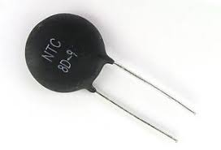
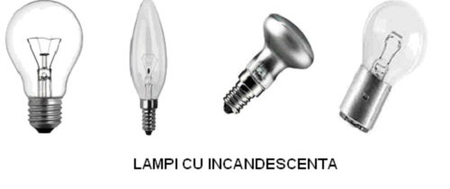
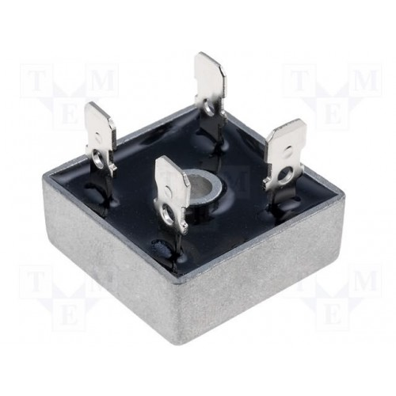

Rezistoare neliniare sunt rezistoarele parametrice.
Rezistoarele ce aparţin acestei categorii sunt caracterizate prin aceea că rezistenţa lor este dependentă de o mărime fizică considerată drept parametru al legăturii dintre tensiunea aplicată la bornele componentei şi curentul ce o parcurge sau invers între curentul ce parcurge componenta şi căderea de tensiune de la bornele componentei.
Întâlnim astfel:
Termistoare componente a căror rezistenţă depinde semnificativ de temperatura la care se află componenta. u=f(i) i = g(u)
Funcţiile: f şi g nu sunt funcţii liniare ca în cazul rezistoarelor liniare (u=Ri sau i=Gu). Legea de variaţie a tensiunii funcţie de curent sau a curentului funcţie de tensiune este puternic dependenta de compoziţia materialului din care este fabricată componenta şi temperatura la care se află componenta
După cum s-a menţionat rezistenţa termistoarelor depinde puternic de temperatură; termistoarele prezintă o caracteristică tensiune-curent U(I) neliniară.
Specific acestei dependenţe de temperatură, în comparaţie cu dependenţa de temperatură a rezistoarelor liniare fixe sau variabile, este faptul că, la variaţia temperaturii cu un grad valoarea rezistenţei termistoarelor se modifică cu zeci de procente (uzual 3 ... 6 %, maxim 40 %). Cu alte cuvinte, este posibil ca într-un interval îngust de temperatură termistorul să-şi înjumătăţească sau să- şi dubleze valoarea rezistenţei.
Dependenţa rezistenţei termistorului de temperatură poate fi:
a)cu coeficient de temperatură negativ - NTC (Negative Temperature Coefficient), caz în care rezistenţa termistorului scade la creşterea temperaturii
b) cu coeficient de temperatură pozitiv - PTC (Positive Temperature Coefficient), caz în care rezistenţa termistorului creşte la creşterea temperaturii
Lămpile cu incandescenţă sunt rezistoare care lucrează la temperatură mare (rezistoare termice). Din cauza încălzirii conductorului, rezistenţa lor variază mult, între starea de funcţionare cu curenţi mult mai mici decât curentul nominal şi starea de funcţionare normală.
Redresoarele cu semiconductori (cu seleniu, siliciu, germaniu, cuproxid etc.) au o conductanţă mare într-un sens (sensul direct) şi una foarte mică în sens contrar (sensul invers) şi au o utilizare extrem de largă în toate domeniile electrotehnicii (electronică, automatizări, aparate de măsură etc.).
